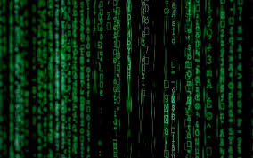
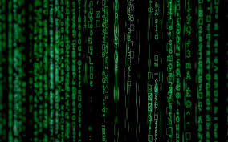

pictures of programming language
.jpg) History of Programming Languages
The first programming language predates the computer by over 125 years. Programming languages first appeared as holes placed strategically on punch cards. These punch cards were fed into the Jacquard Looms and player pianos of the early 1800s to control a sequence of operations and created various patterns in the textiles being created. By simply changing out the cards, the operator of the loom could change the pattern on the textile. This similarity to the early 5.25 and 3.5 inch floppy disks is uncanny.
History of Programming Languages
The first programming language predates the computer by over 125 years. Programming languages first appeared as holes placed strategically on punch cards. These punch cards were fed into the Jacquard Looms and player pianos of the early 1800s to control a sequence of operations and created various patterns in the textiles being created. By simply changing out the cards, the operator of the loom could change the pattern on the textile. This similarity to the early 5.25 and 3.5 inch floppy disks is uncanny.
.jpg) 2. History of Programming Languages
The first computer program was created by Charles Babbage in the early 19th century to run his conceptual Analytical Engine. The Analytical Engine would be able to calculate logarithms and trigonometric functions using his computer program. His original ideas, combined with various mathematical works throughout the late 19th century and early 20th century, were used by Alan M. Turing in his Turing Machines. These machines were conceptualized in the late 1930s and they worked by manipulating various symbols written on a tape. These concepts gave birth to the ideas of computer memory, automated machines, and the basic working of the modern day CPU. The last of the primitive programming languages was used in the famous ENIAC and UNIVAC computers of the late 1940s and early 50s.
2. History of Programming Languages
The first computer program was created by Charles Babbage in the early 19th century to run his conceptual Analytical Engine. The Analytical Engine would be able to calculate logarithms and trigonometric functions using his computer program. His original ideas, combined with various mathematical works throughout the late 19th century and early 20th century, were used by Alan M. Turing in his Turing Machines. These machines were conceptualized in the late 1930s and they worked by manipulating various symbols written on a tape. These concepts gave birth to the ideas of computer memory, automated machines, and the basic working of the modern day CPU. The last of the primitive programming languages was used in the famous ENIAC and UNIVAC computers of the late 1940s and early 50s.
.jpg) Before 1954 almost all programming was done in assembly language. Modern structured programming languages first appeared in the computers of the 1950s and 60s. The initial modern programming languages FORTRAN, LISP, ALGOL, and COBOL became the basis of the computing world in the middle of the 20th century, and many variations of these languages spawned a multitude of new languages. Modified versions or FORTRAN, LISP, ALGOL and COBOL are still used in 21st century machines. As computers became more efficient and accessible to the public, programming languages were forced to match the increasing complexities associated with the vast increase of technology until the early 1970s.
Before 1954 almost all programming was done in assembly language. Modern structured programming languages first appeared in the computers of the 1950s and 60s. The initial modern programming languages FORTRAN, LISP, ALGOL, and COBOL became the basis of the computing world in the middle of the 20th century, and many variations of these languages spawned a multitude of new languages. Modified versions or FORTRAN, LISP, ALGOL and COBOL are still used in 21st century machines. As computers became more efficient and accessible to the public, programming languages were forced to match the increasing complexities associated with the vast increase of technology until the early 1970s.
 The 1970s brought forth the concept of object-oriented programming. Object oriented programming began using data structures to create computer programs. A multitude of the programming languages developed after this period, incorporated object oriented programming into their basic ideas. Another huge accomplishment during the 70s was the creation of the C programming language. C or some variation of C is arguably the most widely used programming language in the world in 2010.

The Internet boom of the 90s gave birth to many of the languages used by programmers today. Scripting languages such as Applescript, Javascript, and Python were born in this era, and paved the way for many other programming languages used for the virtual world of the web. Programming languages are constantly being created, updated, and used. There are currently tens of thousands of programming languages in the world. This is not surprising, because of our dependence on technology and accessibility of powerful computers, designers have free reign to create any language they deem fit to solve any problem. Languages may be created for various reasons ranging from calculating salaries for a corporation to computing the grades of college students.
The 1970s brought forth the concept of object-oriented programming. Object oriented programming began using data structures to create computer programs. A multitude of the programming languages developed after this period, incorporated object oriented programming into their basic ideas. Another huge accomplishment during the 70s was the creation of the C programming language. C or some variation of C is arguably the most widely used programming language in the world in 2010.

The Internet boom of the 90s gave birth to many of the languages used by programmers today. Scripting languages such as Applescript, Javascript, and Python were born in this era, and paved the way for many other programming languages used for the virtual world of the web. Programming languages are constantly being created, updated, and used. There are currently tens of thousands of programming languages in the world. This is not surprising, because of our dependence on technology and accessibility of powerful computers, designers have free reign to create any language they deem fit to solve any problem. Languages may be created for various reasons ranging from calculating salaries for a corporation to computing the grades of college students.
.jpg) Which Program is Best?
Evaluating a language entails a variety of factors that can differ from person to person. However, there are two factors that are common in almost all who compare and contrast different programming languages. Reliability and cost trump most other characteristics of a programming language. For example, Java demands that all references to array elements are checked to make sure that various rules are followed and indices are within their ranges. Although this step ensures reliability, it also ensures that the cost, both in memory, speed, and money are high. The C programming language does not require this checking to be performed, so C executes faster, uses less memory, and can actually cost less monetarily. But the tradeoff for the lower cost is a reduction in overall reliability, which can doom a program after it is created. Determining which language is greater than all the others is similar to trying to determine which aspect of medical science is the best. Each division of medicine is crucial to keep humans healthy, however, with each decade a new subject may be the focus of the medical community. Computer science is similar in the way that new ideas are accepted or rejected. With the boom of the Internet in the late 1990s many programming language appeared with the Internet in mind. As technology advances towards artificial intelligence, languages may veer towards that branch of computer science and new types of languages may appear. Simply finding the best language is what works best for the situation, and for the programmer. A programmer comfortable in C++ will determine that C++ is the best, while a person versed in Python will defend his or her language. The best language is one that suits the program trying to be created, can be applied correctly to the situation, and comfort level of use is high. Any language whether natural or artificial, if mastered, can be used to create great works of art that can be cherished for years to come.
Which Program is Best?
Evaluating a language entails a variety of factors that can differ from person to person. However, there are two factors that are common in almost all who compare and contrast different programming languages. Reliability and cost trump most other characteristics of a programming language. For example, Java demands that all references to array elements are checked to make sure that various rules are followed and indices are within their ranges. Although this step ensures reliability, it also ensures that the cost, both in memory, speed, and money are high. The C programming language does not require this checking to be performed, so C executes faster, uses less memory, and can actually cost less monetarily. But the tradeoff for the lower cost is a reduction in overall reliability, which can doom a program after it is created. Determining which language is greater than all the others is similar to trying to determine which aspect of medical science is the best. Each division of medicine is crucial to keep humans healthy, however, with each decade a new subject may be the focus of the medical community. Computer science is similar in the way that new ideas are accepted or rejected. With the boom of the Internet in the late 1990s many programming language appeared with the Internet in mind. As technology advances towards artificial intelligence, languages may veer towards that branch of computer science and new types of languages may appear. Simply finding the best language is what works best for the situation, and for the programmer. A programmer comfortable in C++ will determine that C++ is the best, while a person versed in Python will defend his or her language. The best language is one that suits the program trying to be created, can be applied correctly to the situation, and comfort level of use is high. Any language whether natural or artificial, if mastered, can be used to create great works of art that can be cherished for years to come.